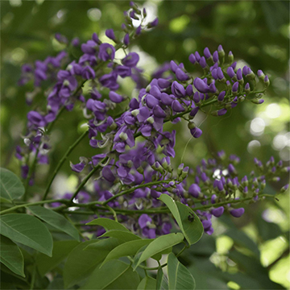
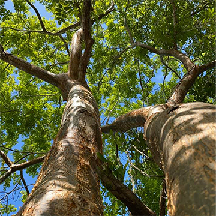
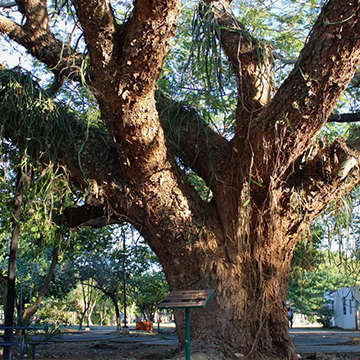
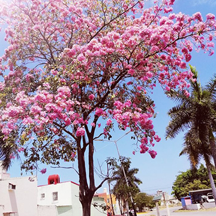

Plantas Endemicas de YucatanEl estado de Yucatán, en el sureste de México, es hogar de una diversidad vegetal única, con muchas especies que no se encuentran en ningún otro lugar del mundo. Estas plantas endémicas han evolucionado en los ecosistemas propios de la región, como la selva baja caducifolia, los cenotes y las zonas costeras. Entre las especies más representativas se encuentran el balché (Lonchocarpus longistylus), árbol sagrado de los mayas usado en ceremonias rituales y en la elaboración de una bebida fermentada; el jabín (Piscidia piscipula), conocido por su madera resistente y propiedades medicinales; el kitanchí (Caesalpinia gaumeri), apreciado por sus flores y su uso ornamental; y el makulis (Tabebuia rosea), un árbol de gran belleza por sus flores rosadas y su sombra. Estas especies no solo forman parte esencial del paisaje yucateco, sino también del conocimiento tradicional, la cultura y la identidad de sus pueblos. Conservarlas es preservar un legado natural y cultural invaluable.
 La planta balché (Lonchocarpus longistylus) es un árbol pequeño originario de la península de Yucatán y Centroamérica. Tiene hojas compuestas y flores violetas. Es muy importante para la cultura maya, ya que de su corteza se prepara una bebida fermentada llamada balché, utilizada en ceremonias rituales y con propiedades medicinales. La planta es considerada sagrada y forma parte de tradiciones ancestrales.
 La Bursera simaruba, conocida comúnmente como chaká rojo, palo mulato, mulato o palo colorado, es una especie sin restricciones de protección según CITES. Su madera tiene un color amarillo crema con bandas blancas y anillos de crecimiento bien definidos, brillo alto en caras radiales, textura media, veteado suave y un hilo recto a ondulado, sin olor ni sabor característicos. Aunque es muy susceptible a termitas como Cryptotermes brevis, hongos y otros insectos, puede adquirir buena resistencia al tratarse con preservadores. Se utiliza en múltiples aplicaciones como chapas, cajas, muebles, interiores, embalajes, juguetes, artículos torneados, cocinas integrales, cerillos, palillos, abatelenguas y construcciones livianas.
El jabín, nombre común en maya de un árbol que puede alcanzar hasta 20 metros de altura, es caducifolio y presenta una copa densa, corteza fisurada, hojas compuestas imparipinnadas con foliolos elípticos de color verde oscuro, y flores rosadas o ligeramente moradas dispuestas en panículas perfumadas que florecen de febrero a mayo. Sus frutos son vainas aladas color café que se quiebran al madurar. Habita en diversos tipos de selvas, incluyendo altas perennifolias, medianas subperennifolias y subcaducifolias, así como bajas caducifolias y espinosas. Tradicionalmente, se valora en la apicultura por su prolongada floración y producción de néctar; además, es usada como forraje, sus hojas tienen propiedades sedantes y para tratar problemas respiratorios, y su madera es de buena calidad.
 El pich (Enterolobium cyclocarpum), conocido también como parota, orejón o guanacaste, es un árbol de gran tamaño originario de las zonas tropicales de América, especialmente común en la península de Yucatán. Puede alcanzar hasta 30 metros de altura, con una copa ancha que brinda mucha sombra. Sus hojas son bipinnadas y caen en la época seca, mientras que sus frutos tienen forma de oreja y contienen semillas comestibles, ricas en nutrientes, que pueden ser cocidas, tostadas o molidas. Es muy valorado por su madera resistente y vistosa, utilizada en muebles, embarcaciones y herramientas. También tiene usos tradicionales en la apicultura, sirviendo como material para colmenas de abejas nativas como la Melipona beecheii. El pich crece en distintos tipos de selvas, desde altas hasta bajas, y es una especie importante tanto por su valor ecológico como cultural.
 El makuilis rosa (Tabebuia rosea), también llamado maculís o palo de rosa, es un árbol caducifolio originario de América tropical, muy común en Yucatán. Alcanza entre 15 y 30 metros de altura y es conocido por su espectacular floración de color rosa a morado entre febrero y abril, cuando pierde sus hojas. Crece en distintos tipos de selvas y suelos, tolera climas cálidos y lluvias abundantes. Su madera se usa en carpintería y construcción ligera, y en la medicina tradicional se aprovechan sus hojas y corteza. Además de su valor ecológico, es muy apreciado como ornamento urbano por su belleza y sombra.
|